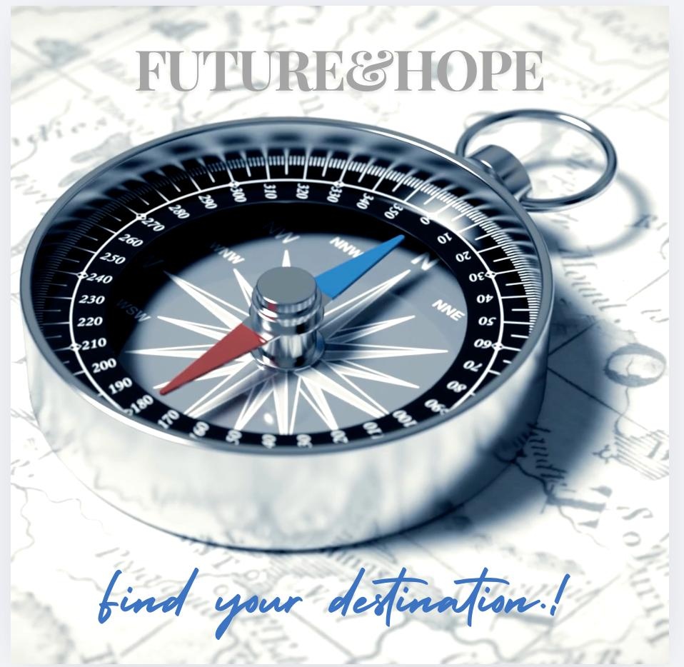

No tienes que caminar solo. Hay alguien que te espera, ahora mismo. You don't have to walk alone. Someone is waiting for you, right now.
Quizás hoy te sientes así…Maybe today you feel like this…
No es que estés fallando. Es que estás avanzando sin dirección. Your Path existe para acompañarte — sin juicios, sin presión, con amor real. You're not failing. You're just moving without direction. Your Path exists to walk with you — no judgment, no pressure, with real love.
¿Qué vas a encontrar?What will you find?
Te escuchamos y acompañamos, sin evaluar.We listen and walk with you, no evaluation.
Inspirados en la Biblia — el libro que guía millones.Inspired by the Bible — the book guiding millions.
Las 2am, un domingo. Cuando más lo necesitas.At 2am, on a Sunday. When you need it most.
Español, inglés — habla como quieras.Spanish, English — speak how you like.
Lo que aquí se habla, aquí queda. Total libertad.What's said here stays here. Total freedom.
Sin listas de espera. Sin turnos. Ahora mismo.No waiting lists. No turns. Right now.
Quiénes somosWho we are
Viví durante 13 años lejos del camino correcto y fui testigo de muchas realidades difíciles: niños violentados, padres atrapados en las drogas, amigos buscando dinero fácil que terminaron en la cárcel o simplemente desaparecieron.
Pero lo más impactante fue esto: nadie, ni una sola vez, nos habló de Jesús ni de su plan de salvación. La desesperación, el vacío y la falta de esperanza guiaban nuestros días.
Hoy, al ver "la otra cara", sé por experiencia que existe mucha oscuridad… y que se necesitan personas que lleven luz. Hay lugares reales, con corazones heridos que claman en silencio.
Estás a un solo clic de recibir una palabra de consuelo, perdón y esperanza.
✨ Este proyecto nace por amor a ti.
I lived 13 years away from the right path and witnessed many difficult realities: abused children, parents trapped in drugs, friends chasing easy money who ended up in prison or simply disappeared.
But the most impactful thing was this: no one, not once, ever told us about Jesus or His plan of salvation. Desperation, emptiness, and hopelessness guided our days.
Today, seeing "the other side," I know from experience that there is much darkness… and that people who carry light are needed. There are real places, with wounded hearts crying out in silence.
You are one click away from receiving a word of comfort, forgiveness, and hope.
✨ This project was born out of love for you.
Crecí en Villa Alegre, en el sur de Chile — un pueblo pequeño donde las raíces son profundas y las tormentas también. No vengo de una historia fácil. Conozco el caos, las noches largas, los momentos donde la fe se pone a prueba y no sabes para dónde ir.
Pero aprendí algo que nadie me enseñó en ningún libro: la fe no necesita ser perfecta para ser real. Desde ese suelo firme — y con la convicción de que la tecnología puede ser un puente de amor — nació Your Path.
Creo que Dios habla a través de todos los tiempos. Y que nadie, sin importar dónde esté en el mundo, debería quedarse sin escuchar una palabra de esperanza.
Desde Villa Alegre, Chile, para el mundo entero — con fe, con amor, y con la certeza de que tu camino tiene propósito. 🧭
I grew up in Villa Alegre, in southern Chile — a small town where roots run deep, and so do storms. I didn't come from an easy story. I know chaos, long nights, seasons where faith is tested and you don't know which way to turn.
But I learned something no book ever taught me: faith doesn't need to be perfect to be real. From that solid ground — and with the conviction that technology can be a bridge of love — Your Path was born.
I believe God speaks through every era. And that no one, regardless of where they are in the world, should be left without hearing a word of hope.
From Villa Alegre, Chile, to the entire world — with faith, with love, and with the certainty that your path has purpose. 🧭
"Vengan a mí todos los que están cansados y llevan cargas pesadas, y yo les daré descanso." "Come to me, all you who are weary and burdened, and I will give you rest."Mateo / Matthew 11:28
No lo guardes más. Puedes hablar aquí mismo, ahora — o por Telegram si lo prefieres. Don't hold it in. Talk right here, right now — or on Telegram if you prefer.
🌿 Apoya la misiónSupport the mission
Your Path llega donde otros no llegan. Cada aporte nos ayuda a seguir disponibles para quien más lo necesita.Your Path reaches where others don't. Every contribution helps us stay available for those who need it most.
💛 Quiero cooperarI want to help